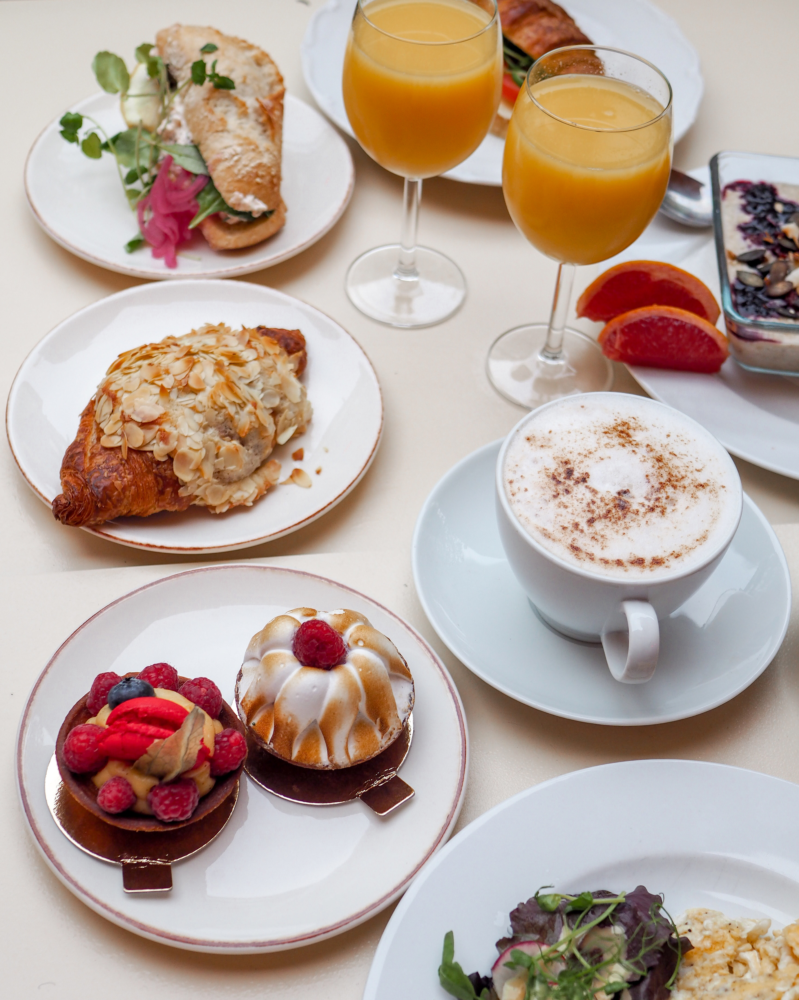

Vår älskade huvudstad bjuder på oändliga möjligheter. Vi har skapat guiden till Stockholm bästa frukost för att låta dig upptäcka vad en morgonstund med guld i mun faktiskt innebär. Du hittar guiden på vår Instagram.
-> Besök vår Instagram eller maila oss för samarbeten.
